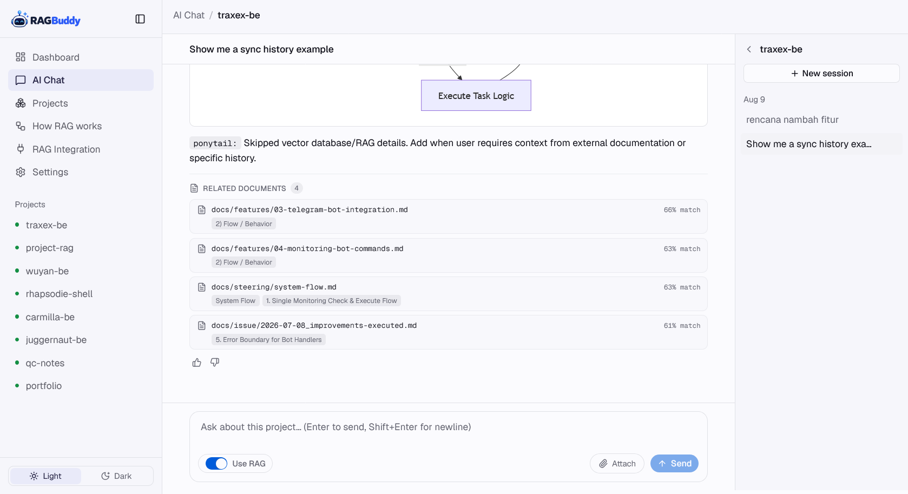
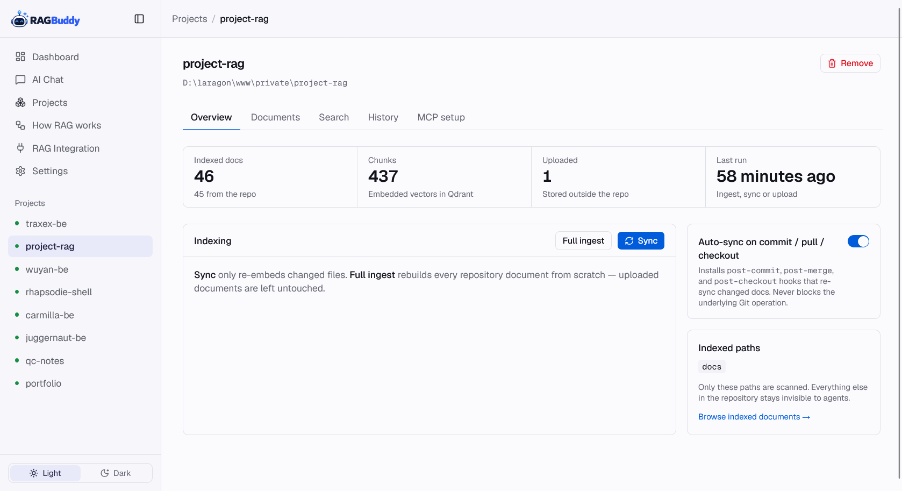
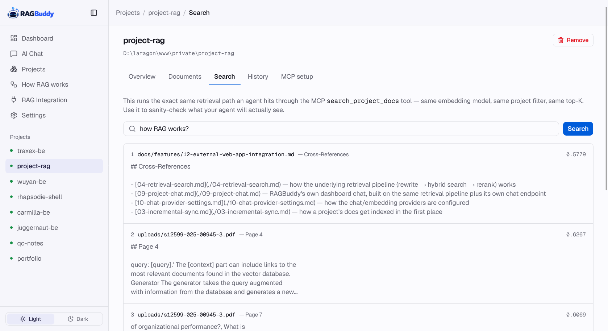
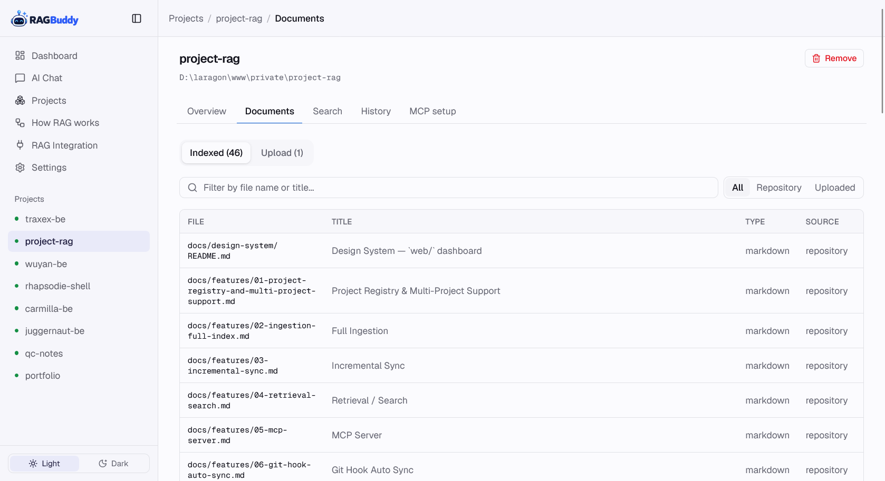
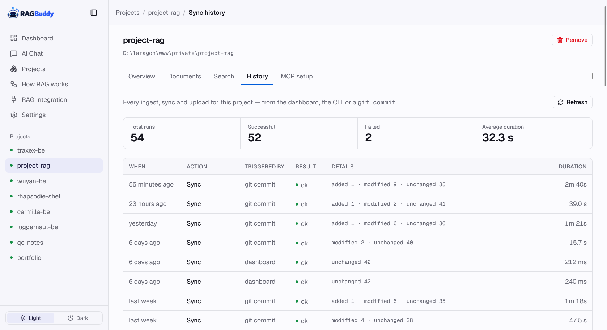
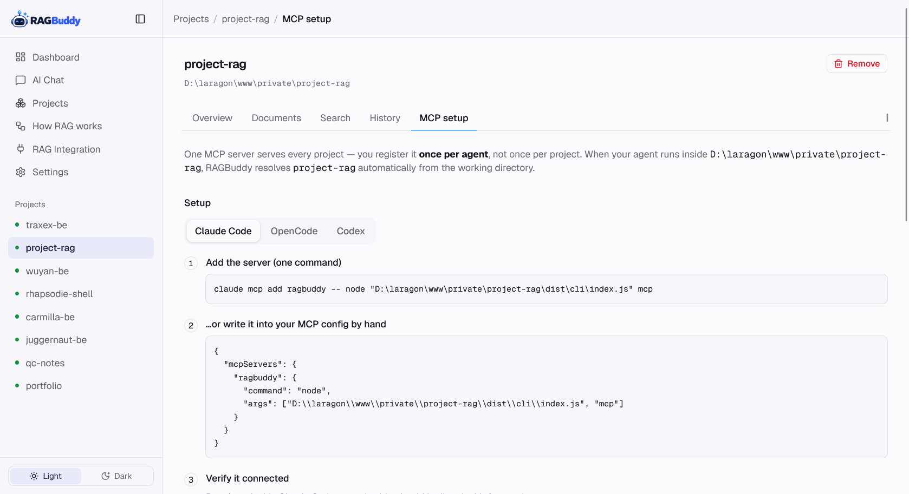

Project-aware RAG for coding agents
RAGBuddy indexes the docs of every Git repository you work on into one searchable knowledge base — then answers from it through a web dashboard with AI chat, a CLI, and an MCP server, all powered by the same core.
Works with Claude Code OpenCode Codex Ollama OpenAI-compatible APIs
Everything your agents need, already wired up
One core, four surfaces: a web dashboard, a CLI, an MCP server, and a REST API. Git stays the source of truth; Qdrant is a rebuildable index.
Project-isolated RAG
Index many repositories into a single Qdrant collection. Retrieval is always filtered by project — one project can never see another's documents.
Git hook auto-sync
Install hooks once; every commit, pull and branch checkout re-syncs in the background. Git is never blocked by embedding.
MCP server
One server serves Claude Code, OpenCode and Codex: get_project_context, search_project_docs, get_project_document, list_project_knowledge.
One-shot answers
ragbuddy ask <project> "…" runs the full pipeline — rewrite → hybrid vector+BM25 → rerank → one completion — straight in the terminal.
Web AI chat
Streaming answers grounded in your docs, with cited sources, a Use-RAG toggle, file attachments and session history saved per project.
Upload anything
Drop in PDF, Word, Excel, Markdown, CSV or text documents outside the repo — extracted into the same searchable index.
Local-first & private
Runs on your machine with Ollama for embeddings and chat. No cloud required — your docs never leave your network.
RAG for your own apps
Call /search or the SSE /chat endpoint from any web app — same retrieval pipeline, no vector database to run yourself.
How it works
From a plain Git repository to grounded answers in three steps.
Register & index
Point RAGBuddy at a repository with ragbuddy project register, then ragbuddy ingest — its docs folder is scanned, chunked and embedded into Qdrant.
Sync automatically
Content-hash diffs re-embed only changed files. Git hooks fire on commit/pull/checkout, and ragbuddy sync-all is the cron safety net.
Ask anywhere
Chat in the dashboard, ask in the terminal, or let your coding agent query through MCP — every path uses the same retrieval pipeline.
See it in action
Real screens from the dashboard — click any shot to view it full size.






One MCP server for every agent
Connect it once — the current project is resolved automatically from the agent's working directory.
get_project_contextCompact orientation: README, architecture summaries, git status, doc inventory.
search_project_docsSemantic search over the project's knowledge, same pipeline as the dashboard.
get_project_documentRead a specific document — path-traversal-safe, returns the file you asked for.
list_project_knowledgeSee everything currently indexed when starting from scratch.
# connect RAGBuddy to Claude Code (OpenCode & Codex supported too) claude mcp add ragbuddy -- node /absolute/path/to/ragbuddy/dist/cli/index.js mcp
# Add it to opencode.json { "mcpServers": { "ragbuddy": { "command": "node", "args": ["/var/www/html/ragbuddy/dist/cli/index.js", "mcp"] } } }
RAG for your own apps
Integrate the same high-quality retrieval into your internal tools and dashboards through a simple REST API.
POST /api/search
Retrieve ranked document chunks. Returns a list of segments with relevance scores and original file metadata.
POST /api/chat
Full RAG pipeline with streaming support (SSE). Returns cited answers grounded in your indexed repository.
# Search document segments for any project curl -X POST http://localhost:4300/api/search \ -H 'Content-Type: application/json' \ -H 'X-API-Key: your_key' \ -d '{ "projectId": "my-project", "query": "how to set up auth", "limit": 5 }'
{
"results": [
{
"file": "docs/auth.md",
"section": "## Implementation",
"score": 0.92,
"content": "To set up authentication..."
}
]
}
# Get a cited answer from your docs curl -X POST http://localhost:4300/api/chat \ -H 'Content-Type: application/json' \ -H 'X-API-Key: your_key' \ -d '{ "projectId": "my-project", "messages": [{ "role": "user", "content": "how does the sync work?" }], "stream": false }'
# Streaming tokens followed by sources metadata event: token data: {"text": "The sync process..."} event: sources data: {"sources": [{"file": "sync.md", "section": "## Flow", "score": 0.85}]} event: done data: {}
Quick start
Node.js 18+, npm and Docker (for Qdrant). Ollama is optional — OpenAI-compatible embeddings work too.
# requirements: Node.js 18+, npm, Docker (Qdrant), optional Ollama git clone git@github.com:azmirizkifar20/RAGBuddy.git cd RAGBuddy npm install npm run build cp .env.example .env # optional, if you have already installed Qdrant & have another embedding model, you can skip this step docker compose up -d # Qdrant ollama pull bge-m3 # local embeddings (optional) # register a project and ingest its docs ragbuddy project register my-project /path/to/my-project ragbuddy ingest my-project # Set up Chat credentials (OpenAI Compatible or Ollama) in /settings page of the dashboard # then you can ask a question from the project docs ragbuddy ask my-project "how does auto-sync work?"